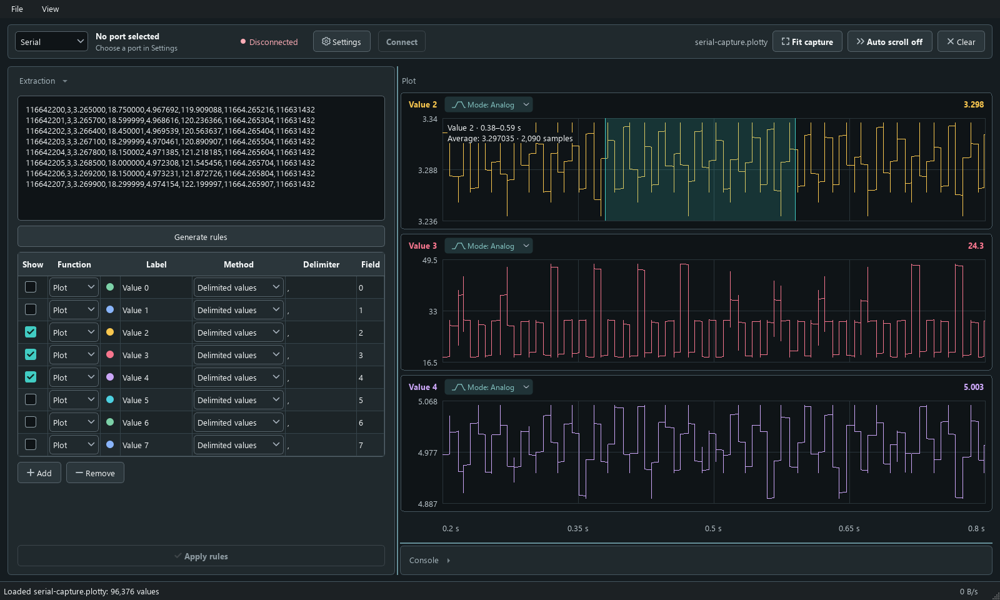

Serial and RTT plotting.
A desktop serial monitor and plotter for Windows, macOS, and Linux.
Latest release · MIT licensed

Windows · macOS · LinuxNative desktop releases
Open sourceMIT licensed on GitHub
Capture filesSave .plotty and export CSV
Using PlotTTY
Choose Serial or J-Link RTT, open Settings, and save your connection details. Enable Log to file if you want a recording, then click Connect.
Paste sample output in the extraction sidebar. Click Generate rules, check the fields, then Apply rules. Field numbering starts at zero.
| Action | Control |
|---|---|
| Calculate an average | Drag across a signal and release. |
| Pan time | Shift + drag, middle-drag, or drag the bottom time axis. |
| Zoom time | Scroll the mouse wheel. |
| Adjust the Y axis | Drag or scroll over it. Double-click to reset. |
| Clear a selection | Click the plot or press Escape. |
| Follow or fit the data | Use Auto scroll for new samples or Fit capture for the full time range. |
Read the user guide for profiles, recordings, and console commands.
Windows, macOS,
and Linux.
Portable releases include everything needed to run PlotTTY. No separate Python installation required.
Extract the archive and keep the app with its supporting files. J-Link RTT also needs SEGGER's J-Link software installed.
Release notes and checksums